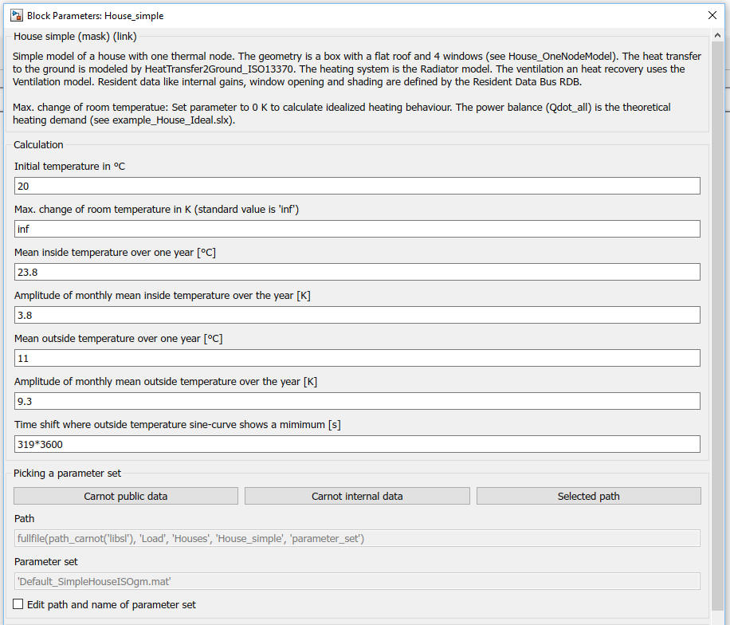
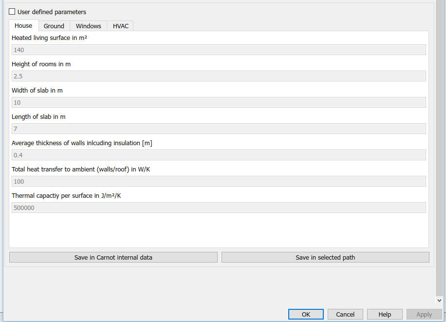

House_simple
House_simplePath: CARNOT/Loads/Houses
House_simple
Path: CARNOT/Loads/Houses
Purpose
Simple one node / one zone model of a house
with an integrated heating system. A neighbour building may be modelled by
using the same block or just as a constant temperature zone.
Description
House_simple uses the model House_OneNodeModel for the building physics.
The heating system uses the Radiator model.
The air exchange by
is calculated by the Ventilation block.
Input:
Output:
Parameters and Dialog Box
Parameter sets can be loaded from a configuration file or can be edited by the user. See Basic Concepts - 6.2 Parameters and Dialog Box of the Model


Verifcation and Validation
See [Peter, Wintler, Dott 2014] and verfiy_HouseSimple.m in the verification folder of the model.
Literature
Andreas Peter, Christian Winteler, Ralf Dott : Implementation of the IEA SHC & HPP T44/A38 Boundary Conditions in Matlab/Simulink with CARNOT-blockset A Platform Independence Check for the IEA SHC Task 44 / HPP Annex 38 – Subtask C, Institut Energie am Bau - Fachhochschule Nordwestschweiz, 2014
Michel Y. Haller, Ralf Dott, Jörn Ruschenburg, Fabian Ochs, Jacques Bony: The Reference Framework for System Simulations of the IEA SHC Task 44 / HPP Annex 38 Part A: General Simulation Boundary Conditions A technical report of subtask C Report C1 Part A, 2013
Ralf Dott, Michel Y. Haller, Jörn Ruschenburg, Fabian Ochs, Jacques Bony : The Reference Framework for System Simulations of the IEA SHC Task 44 / HPP Annex 38 Part B: Buildings and Space Heat Load A technical report of subtask C Report C1 Part B, 2013
Characteristics
Direct Feedthrough Yes
Sample
time
Inherited
from driving block
States
2
(one for the room, one for the radiator)
Vectorized
No